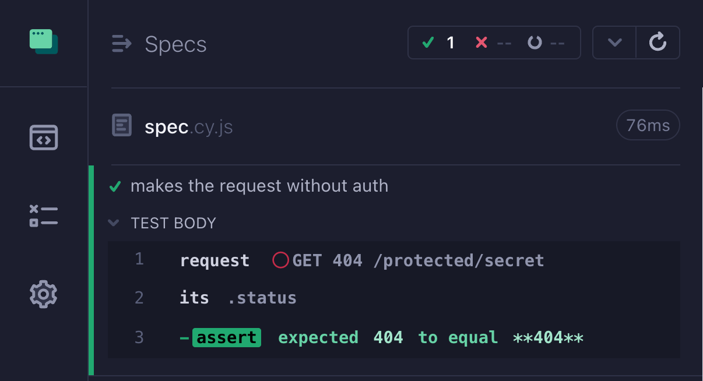
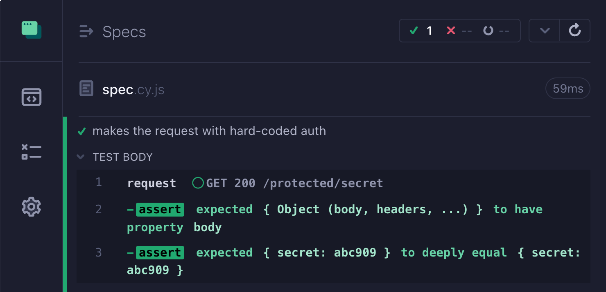
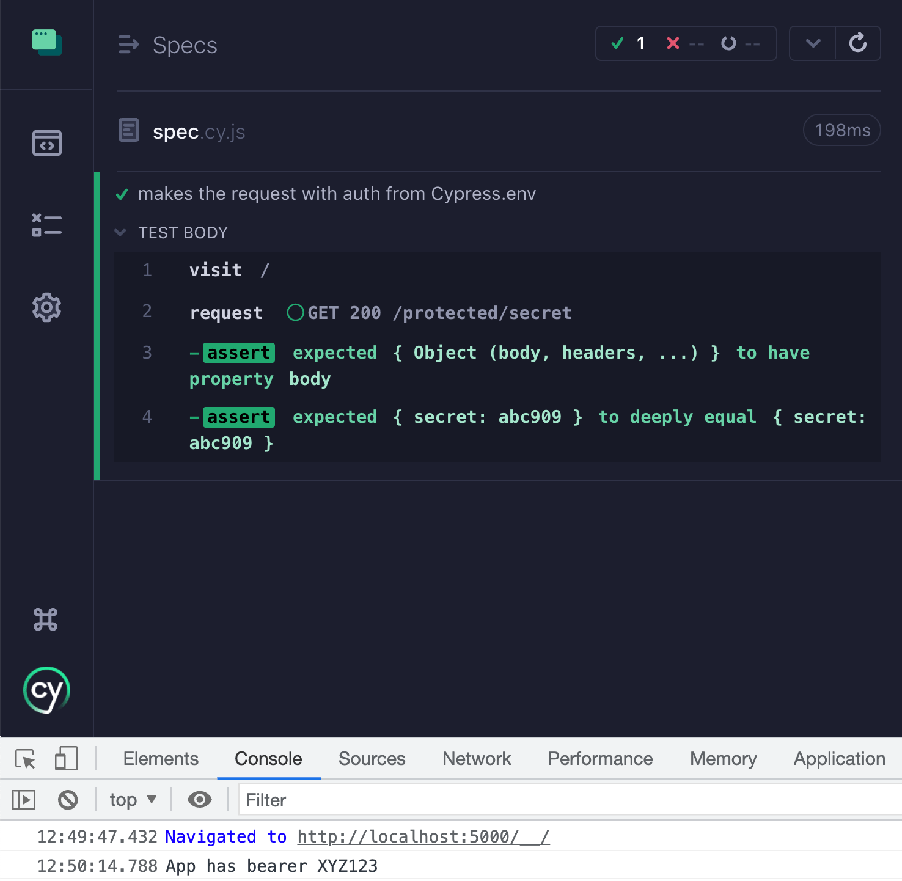
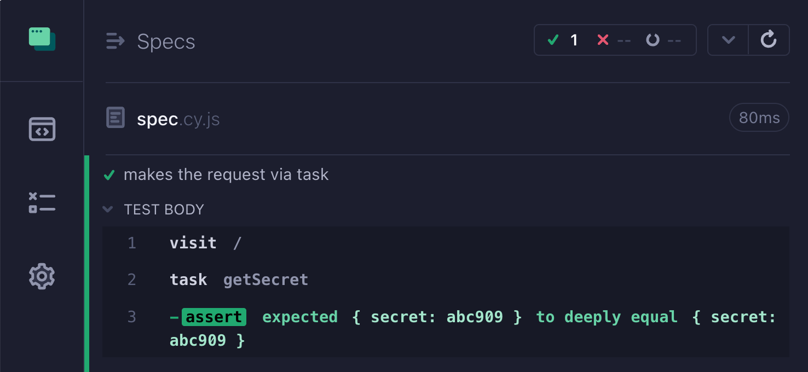
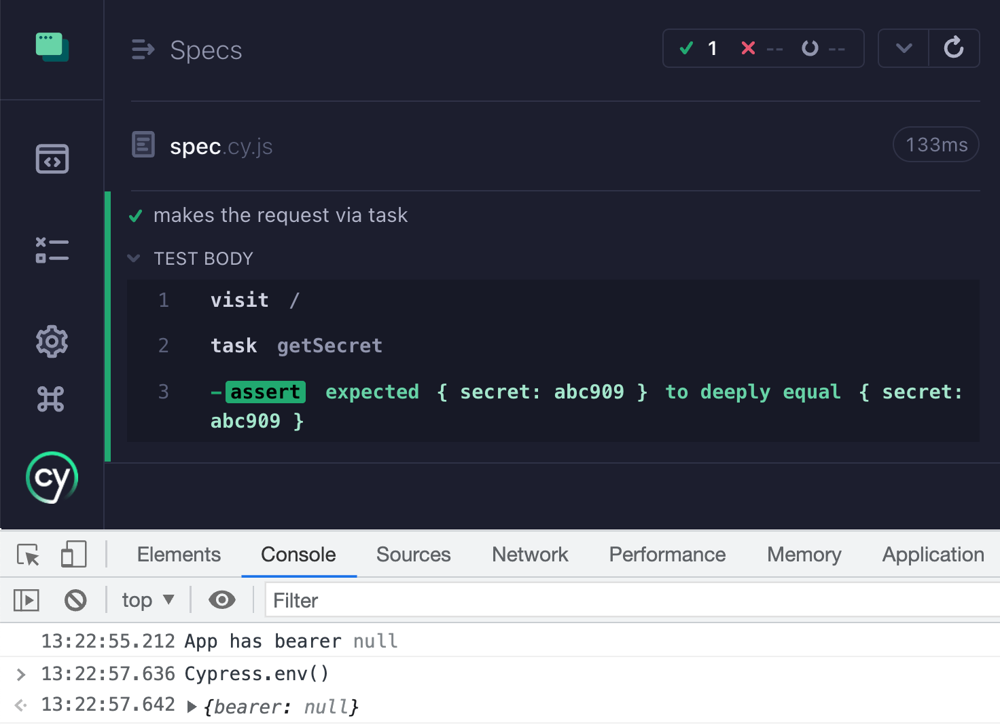
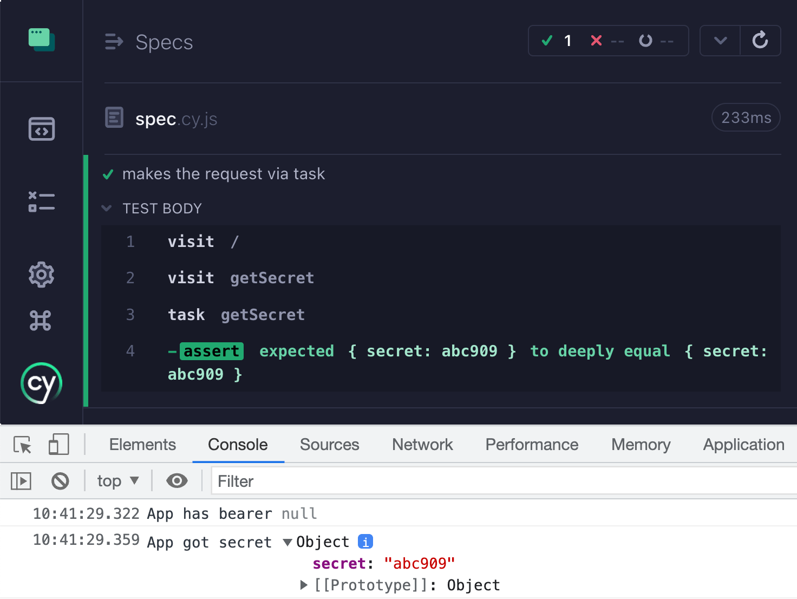
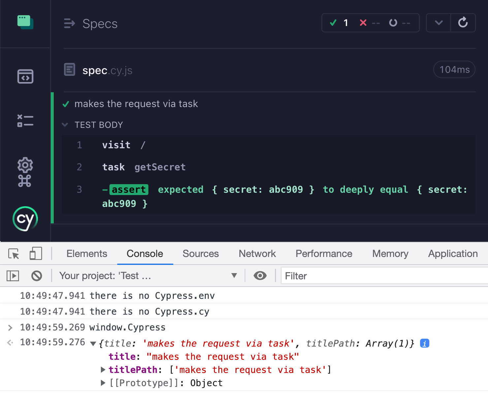

Let's take an application where the test makes a request to an external site using cy.request command. Without authentication header, the request fails.
1 | it('makes the request without auth', () => { |

🎁 You can find the full source code for this blog post in bahmutov/cypress-env-var-example repo.
The server
Our server is very simple, it looks at Authorization request header to allow the request
1 | const handler = require('serve-handler') |
We can pass the authorization when making the call using the cy.request command
1 | it('makes the request with hard-coded auth', () => { |

We probably do not want to hard-code the bearer token in the spec file, thus we can move it into the Cypress.env variables as I described in Keep passwords secret in E2E tests blog post.
1 | it('makes the request with auth from Cypress.env', () => { |
We would open or run Cypress with the environment variable bearer set. For example:
1 | $ npx cypress open --env bearer=XYZ123 |
Is it safe?
Any browser code can access the Cypress.env object. Since Cypress tests run in the browser, and Cypress sets the window.Cypress reference, then the application code can read the bearer token.
1 | <body> |

Is this a huge security hole? No. If your page loads untrusted code like this, the game is over already. But still, you do not want to give out private tokens via shared Cypress.env object.
Move the request to Node
Luckily, Cypress has its part running in Node environment, safely isolated from the browser window. You can move the request and call it via cy.task command.
1 | const { defineConfig } = require('cypress') |
Tip: inside the callback
setupNodeEvents(on, config)I am usingconfig.baseUrlto form the URL to fetch:
This allows me to control the base URL via the standard Cypress configuration methods. For example, if I am testing a deployed server via
CYPRESS_baseUrl=https://staging.acme.co BEARER=XYZ123 npx cypress runno changes would be necessary.
I am using Node v16.17.0 to run Cypress, thus I need to enable the experimental fetch support and pass the BEARER as an operating system environment variable.
1 | $ BEARER=XYZ123 NODE_OPTIONS=--experimental-fetch npx cypress open |

Transition from Cypress.env to the operating system environment variable
If you are using CYPRESS_ variable and want to move to use a plain operating system variable, you might have to tell every member of the team to change how they inject env variables. I hope they use as-a already, but even then they would need to change their local secrets. Thus when transitioning, I advise warning about the CYPRESS_ variable and removing it from the config.env object in your cypress.config.js file
1 | setupNodeEvents(on, config) { |
Let's say someone is still using CYPRESS_BEARER=.... The variable has been "moved" to process.env and removed from config.env object by setting it to null.
1 | $ CYPRESS_bearer=XYZ123 NODE_OPTIONS=--experimental-fetch npx cypress open |
The variable BEARER has been removed from the Cypress.env object

Can application code call a Cypress task?
If we move the secret token to the Cypress Node process and access it from the spec file by calling cy.task('getSecret'), we have not cut off the application code from accessing it. Turns out, the Cypress global object has a reference to the cy object, which has a low-level now command that can execute any Cypress command out of band.
1 | <body> |

In my opinion, setting the full Cypress object reference as window.Cypress in the application's iframe is a mistake. The test runner should only set window.Cypress object with the current spec / test information, and nothing more. Luckily we can do it ourselves from the E2E support file that loads before each spec and before the application code loads.
1 | Cypress.on('window:before:load', (win) => { |
Let's update the application code a little bit to be defensive about trying to access the Cypress environment variables and cy.now method:
1 | <body> |
Running the test shows we are safe(r) now!

Stay safe out there!